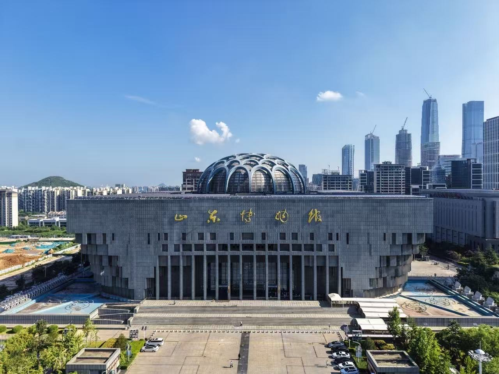

让文物走出展柜，把鲁博带回家

✳山东博物馆是国家一级博物馆,成立于1954年,是新中国成立后建立的第一座省级综合性地志博物馆。
✳馆藏文物超过14万件,涵盖青铜器、陶器、瓷器、石刻、书画、甲骨等多个品类,是展示齐鲁文化五千年历史的重要窗口。
✳本馆以传承中华优秀传统文化、弘扬齐鲁文明为使命，通过文物展览、社会教育、文化创意等多种形式，让历史走进现代生活，让文化真正活起来。
✳山东博物馆文创中心，致力于将馆藏文物与现代生活结合，打造兼具文化内涵与实用价值的文创产品，让每一位观众都能把齐鲁文化带回家。